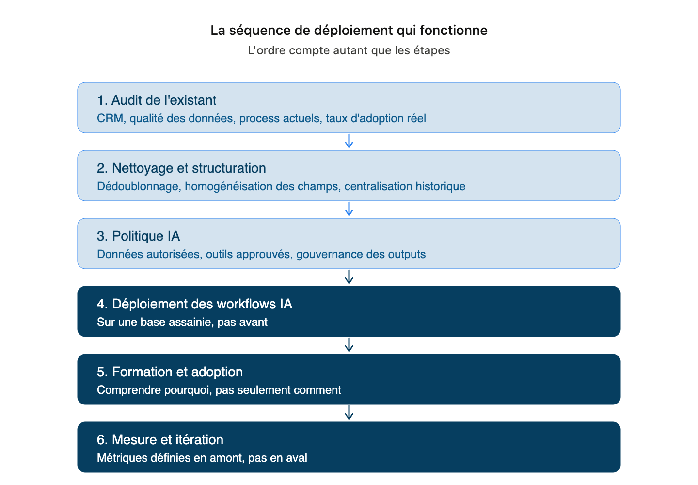
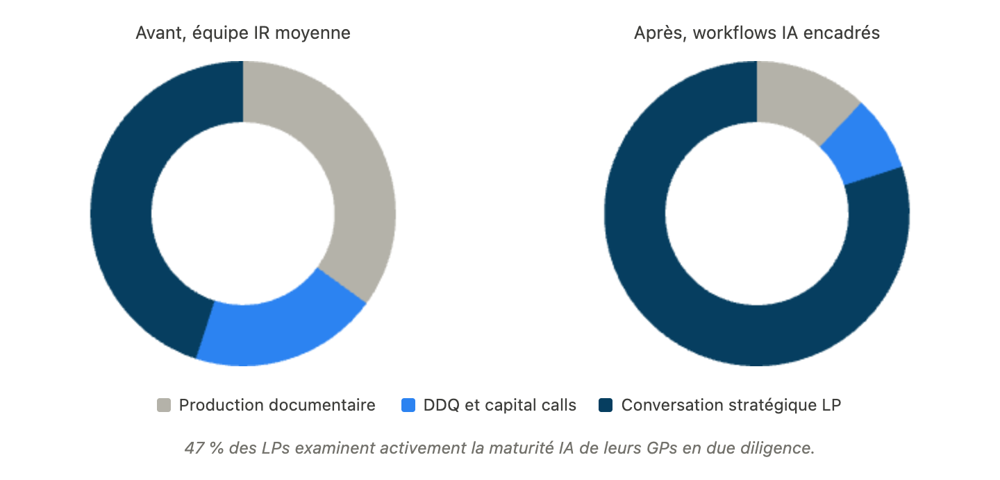
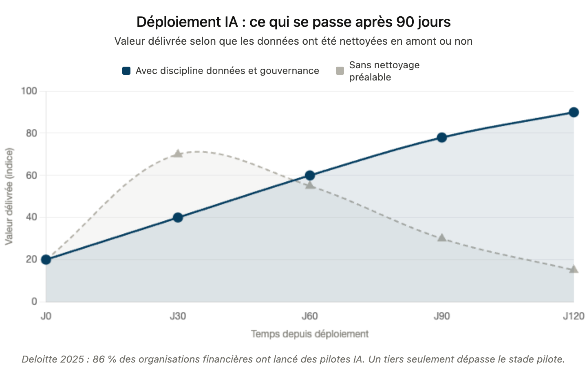
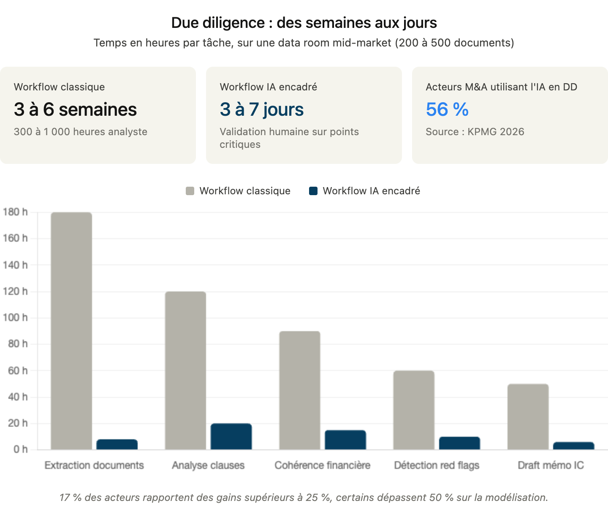
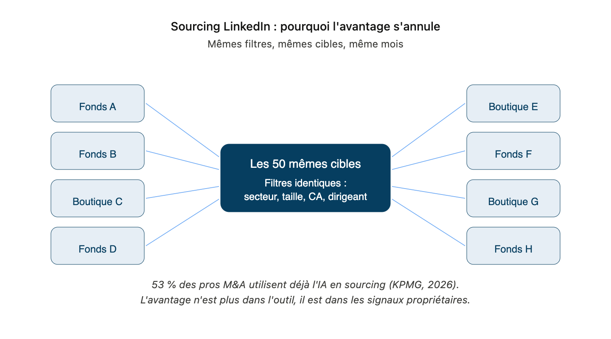
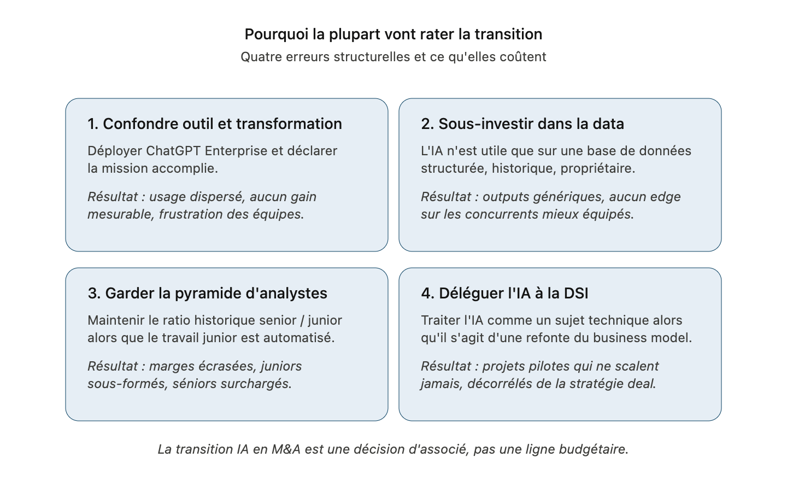
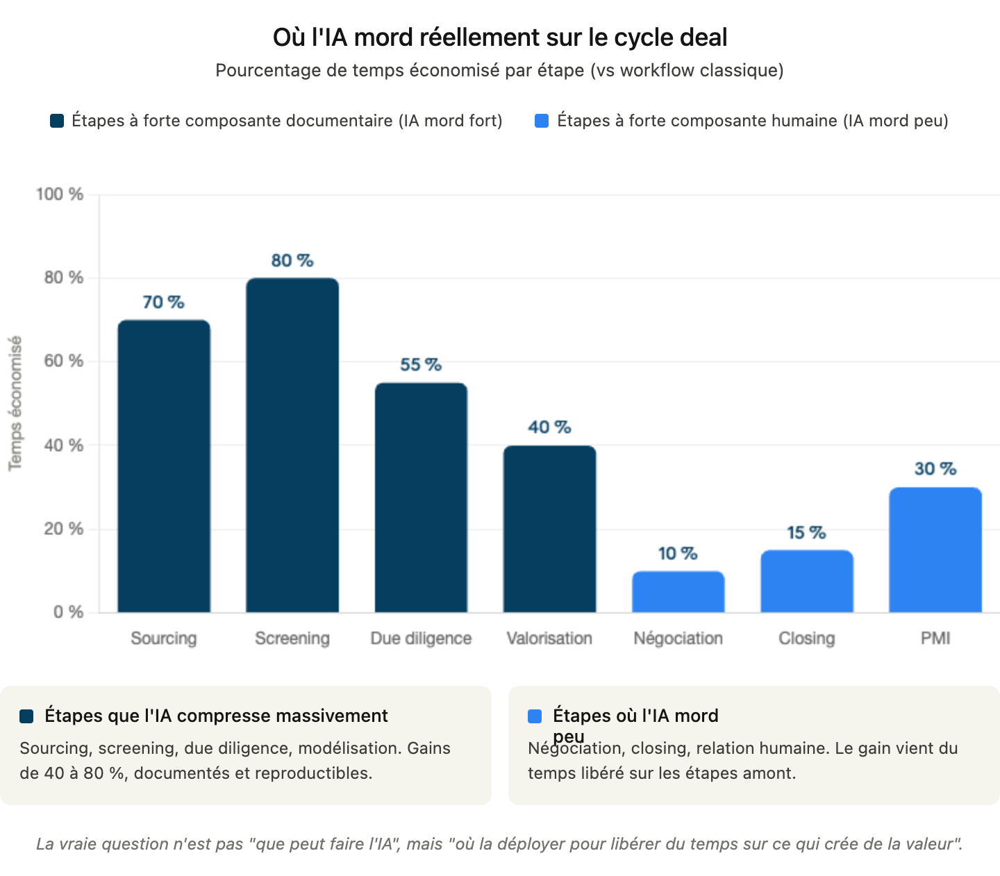
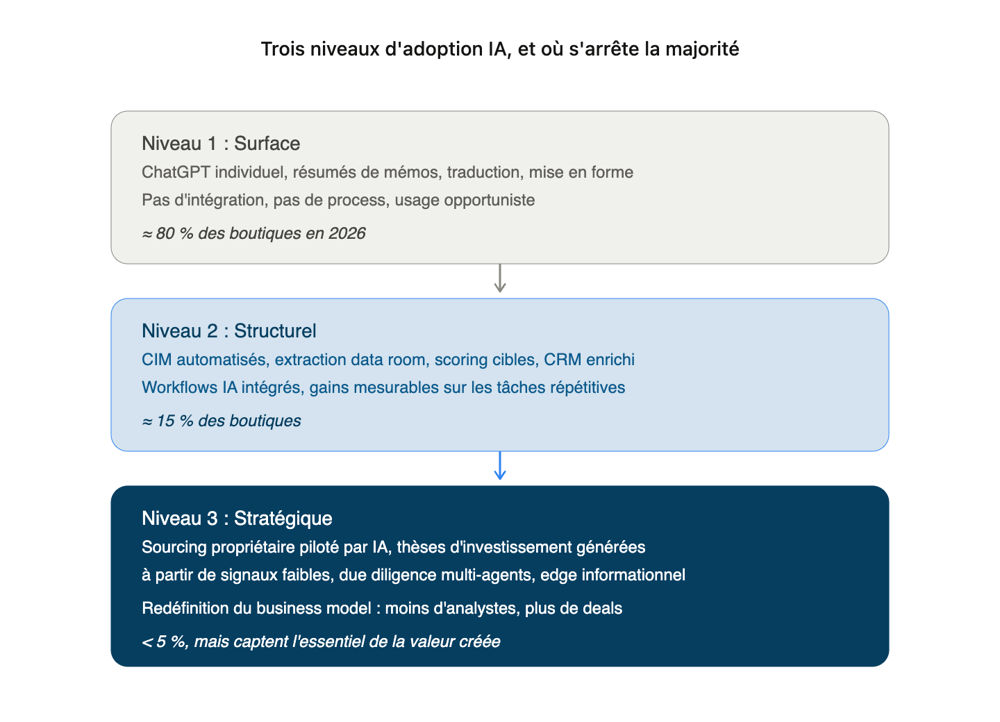
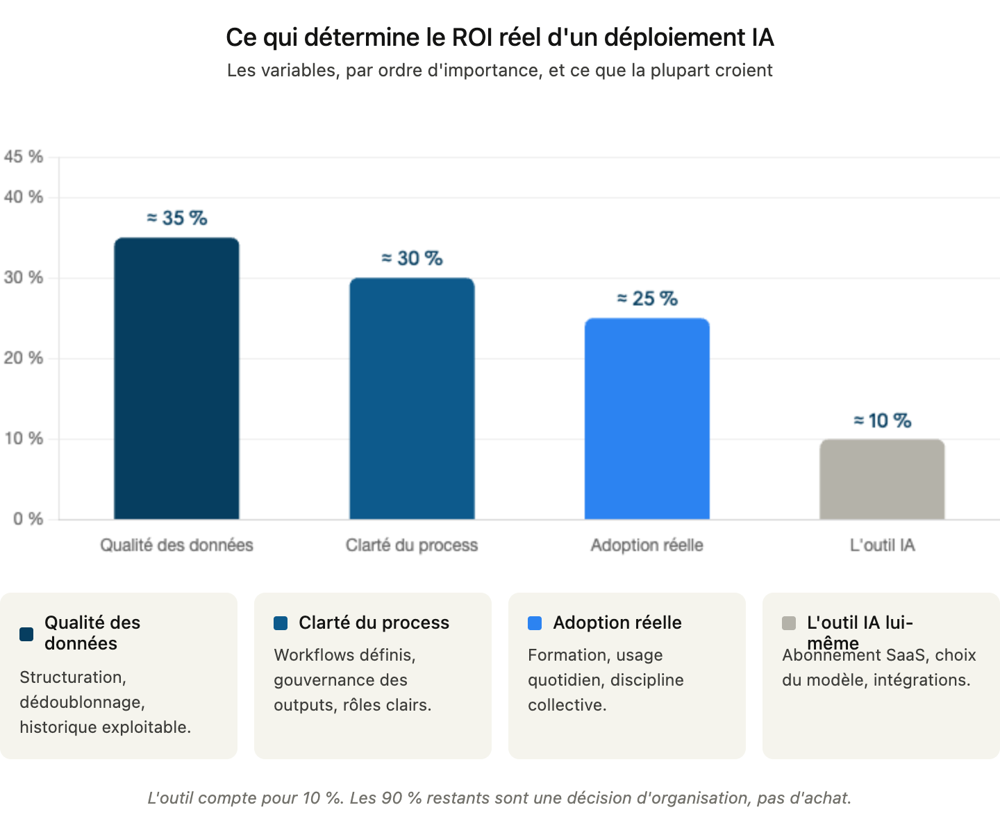

Votre associé senior a 15 ans de réseau dans la tête. Votre CRM ressemble à ce qu'on a rempli entre deux closings. Et vos outils IA ? Soit ils n'existent pas encore, soit ils ont été achetés en janvier et plus personne ne les ouvre vraiment en avril.
Ce n'est pas un retard isolé. C'est la situation réelle de la grande majorité des fonds mid-market et boutiques M&A en 2026, y compris ceux qui pensent être en avance.
L'IA crée un avantage compétitif mesurable dans le M&A, le VC et le PE. Mais uniquement pour ceux qui ont compris une chose contre-intuitive : l'outil est la dernière variable qui compte. Ce qui détermine 80 % du résultat, c'est la qualité des données qu'on lui donne, la clarté du process dans lequel on l'intègre, et le taux d'adoption réel des équipes.

Les fonds qui ont compris ça tirent de l'IA un avantage structurel. Les autres achètent des abonnements qui coûtent cher et ne changent rien.
Avant de rentrer dans les cinq chantiers où l'IA transforme concrètement les opérations M&A, il faut comprendre ce qui est en train de se jouer à un niveau plus structurel. Trois choses à poser : où en est la majorité du marché, où l'IA mord vraiment sur le cycle deal, et pourquoi la plupart vont rater la transition. Ensuite seulement on peut parler d'outils utilement.
Avant les outils : comprendre la bascule qui est en train de se jouer
Les trois niveaux d'adoption, et où se situe la majorité
Parler d'IA en M&A en 2026 sans distinguer les niveaux d'adoption, c'est comme parler de digitalisation en 2005 sans faire la différence entre "avoir un site web" et "vendre en ligne". La plupart des boutiques et fonds mid-market qu'on rencontre se situent au niveau 1 : usage individuel et opportuniste de ChatGPT, aucune intégration aux process, pas de gouvernance. C'est utile pour les collaborateurs, mais ça ne crée aucun avantage compétitif au niveau de la firme.
Une minorité est passée au niveau 2 : workflows IA intégrés sur les tâches répétitives telles que l'extraction de documents pour remplir la data room, le scoring de cibles, l'enrichissement CRM. Les gains sont mesurables, l'organisation commence à tirer un bénéfice réel. C'est déjà un bon positionnement, mais ce n'est pas encore un avantage durable : les outils du niveau 2 se commoditisent vite.
Et quelques acteurs, moins de 5 % à date, ont atteint le niveau 3 : l'IA y redéfinit le business model lui-même. Sourcing propriétaire piloté par signaux faibles, due diligence multi-agents, thèses d'investissement appuyées à partir de données propriétaires riches. Ces acteurs ne font pas la même course que les autres. Ils captent l'essentiel de la valeur créée par la transformation.

Où l'IA mord réellement sur le cycle deal
Le gain de temps promis par les outils IA n'est pas uniforme sur le cycle deal. Certaines étapes plient massivement sous l'IA. D'autres restent intrinsèquement humaines, et le resteront.
L'IA compresse massivement les étapes à forte composante documentaire et analytique : sourcing, screening initial, due diligence, modélisation financière. C'est là que les gains de 40 à 80 % sont documentés et reproductibles. À l'autre extrême, les étapes qui reposent sur la relation, la lecture du non-dit et le jugement commercial : la négociation, le closing, la relation LP, ne bénéficient que marginalement de l'IA. Elles bénéficient par contre énormément du temps libéré sur les étapes amont.
Comprendre cette asymétrie évite deux erreurs symétriques : surestimer l'IA en pensant qu'elle va tout faire, ou la sous-estimer en la cantonnant à un gadget de productivité individuelle. La vraie question n'est pas "que peut faire l'IA ?" mais "sur quelles tâches dois-je la déployer en priorité pour libérer du temps sur les activités qui créent réellement de la valeur pour mes clients et mes LPs ?"

Pourquoi la plupart vont rater la transition
Ce qui distingue les acteurs qui réussissent de ceux qui échouent n'est pas leur budget IA, ni leur niveau technique. C'est leur capacité à éviter quatre erreurs structurelles qui se ressemblent toutes sur un point : elles traitent l'IA comme une ligne budgétaire ou un sujet technique, alors que c'est une décision d'associé qui engage le business model de la firme.
Ces quatre pièges ne sont pas théoriques. On les voit, dans cet ordre de fréquence, chez la grande majorité des fonds et boutiques qu'on rencontre. Les quatre sont évitables, mais seulement si on les nomme à temps.

Ces trois dimensions (niveau d'adoption, cartographie des gains, pièges à éviter) posent le cadre. Reste à rentrer dans les cinq chantiers concrets où l'IA transforme les opérations M&A. Pour chacun, la même grille : ce qui fonctionne, ce qui échoue systématiquement, et les questions qu'on évite de poser.
Deal Sourcing : de l'instinct au signal, oui mais lequel ?
Pendant des années, le sourcing reposait sur deux choses : le carnet d'adresses et la chance d'être au bon endroit au bon moment. C'est toujours vrai. L'IA ajoute une troisième dimension : la détection systématique des signaux faibles avant que la cible soit sur le marché.
Mais regardons ce qui se passe déjà : aujourd'hui, la quasi-totalité des boutiques M&A et des fonds mid-market sourcent sur LinkedIn avec les mêmes filtres (secteur, taille d'entreprise, titre du dirigeant…). Résultat : les mêmes 50 cibles reçoivent les mêmes InMails de 8 acteurs différents le même mois. LinkedIn est devenu un marché efficient, au sens le plus défavorable du terme, car plus personne n'y a d'avantage réel.

Les outils de sourcing augmenté promettent de changer ça en scannant en temps réel les dépôts légaux, les levées de fonds, les mouvements de dirigeants, les publications sectorielles et les données financières publiques pour identifier des cibles avant qu'elles entrent dans un processus formel. Ce qui nécessitait une équipe d'analystes pendant deux semaines se fait désormais en quelques heures.
Selon une étude de KPMG, 53 % des professionnels M&A utilisent déjà l'IA dans leur processus de deal sourcing. Ce n'est plus un avantage early adopter, c'est une pratique qui se normalise rapidement.
Ce qui change concrètement :
- Un screening de 500 cibles potentielles réduit à une shortlist qualifiée en moins de 48 h
- Des alertes automatiques sur les déclencheurs de cession : succession familiale, restructuration capitalistique, entrée d'un nouveau concurrent, tension de trésorerie détectée dans les dépôts légaux
- Un CRM qui se met à jour automatiquement quand une cible lève des fonds ou change de dirigeant
Le premier à identifier une opportunité a un avantage structurel sur le prix et la relation. Mais si votre sourcing IA repose exclusivement sur des données publiques, vous courez la même course que vos concurrents, juste plus vite. L'avantage compétitif réel est dans vos signaux propriétaires, pas dans votre abonnement SaaS. Si 53 % du marché utilise les mêmes outils sur les mêmes signaux, l'edge s'annule par définition.
Due Diligence : des semaines aux jours… avec des risques qu'on sous-estime
La due diligence est le poste où l'IA crée l'impact le plus visible et le plus rapide à mesurer.
Dans une opération standard de mid-market, l'analyse d'une data room de 200 à 500 documents mobilise typiquement 2 à 5 analystes pendant 3 à 6 semaines, soit entre 300 et 1 000 heures de travail analytique. Des modèles LLM spécialisés peuvent aujourd'hui extraire, structurer et synthétiser cette masse documentaire en quelques jours. Clauses de change of control, engagements hors bilan, risques réglementaires sectoriels, cohérence des données financières inter-documents : le gain de productivité est réel et documenté. Selon une étude KPMG 2026, 56 % des acteurs M&A utilisent l'IA en due diligence et valorisation, avec 17 % qui rapportent des gains d'efficacité supérieurs à 25 % sur leurs processus d'analyse, certains dépassant les 50 % sur des tâches spécifiques de modélisation.

Ce que ça change en pratique :
- Moins de nuits à faire du Ctrl+F dans des PDFs de 400 pages
- Des red flags contractuels identifiés en quelques heures sur l'ensemble du corpus documentaire
- La capacité de gérer plus de mandats simultanément avec la même équipe
- Un premier draft de mémo d'investment committee généré à partir des analyses structurées
Ce qu'on sous-estime systématiquement :
Le risque d'hallucination des LLMs sur des documents juridiques et financiers complexes n'est pas un risque théorique. Il est réel, documenté, et les conséquences dans un contexte M&A sont potentiellement matérielles. Un LLM peut confondre deux entités, mal interpréter une clause conditionnelle, ou synthétiser incorrectement un tableau financier présenté dans un format non standard.
Les meilleurs workflows ne font pas confiance à l'IA sur les points critiques. Ils l'utilisent pour identifier rapidement où concentrer la validation humaine. La bonne métaphore n'est pas "pilote automatique" mais "co-pilote qui ne signe jamais les actes à votre place."
Une boutique M&A qui réduit son temps de DD de 40 % peut absorber plus de mandats, répondre plus vite aux clients, et améliorer ses marges sans recruter. Mais la valeur créée disparaît entièrement si un red flag critique passe à travers les mailles parce que personne n'a validé la synthèse IA. La gouvernance des outputs IA en DD n'est pas optionnelle, c'est la condition d'existence du ROI.
CRM et Relationship Intelligence : votre mémoire institutionnelle enfin exploitable
C'est le chantier le moins glamour, et pourtant le plus transformateur sur la durée.
Le problème est universel et précis : chaque partner a sa façon de noter ses contacts. Les interactions clés dorment dans des boîtes mail personnelles. Quand un senior quitte le fonds, il part avec 30 % de la mémoire relationnelle. Et personne ne sait vraiment "où en est" la relation avec le CFO de telle cible qu'on a appelé il y a 8 mois, parce que cette information n'a jamais existé dans un système partagé.
L'IA appliquée au CRM résout exactement ça :
- Enrichissement automatique des contacts : fonction, historique de levée, mouvements récents, connexions communes dans le réseau
- Résumé IA des interactions passées : "Dernière conversation : janvier 2026. Horizon de cession dans 18 mois. Fourchette de valorisation attendue : 50-80 M€. Blocage principal : gouvernance familiale, deux frères avec des visions divergentes sur la sortie."
- Scoring relationnel : qui dans votre réseau est en contact avec la cible ? À quelle distance ? Qui activer pour une introduction de premier cercle ?
- Alertes de relance contextualisées : un contact clé change de poste → le système détecte le signal, propose un message de reconquête adapté au nouveau contexte
Selon une étude Deloitte publiée en 2025, 86 % des organisations financières ont initié des expérimentations IA générative dans leurs workflows. Mais seulement un tiers a dépassé le stade pilote avec des résultats mesurables et pérennes. La majorité a un CRM. Peu en font une arme.
La raison de cet échec est presque toujours la même : on a déployé l'IA sur une base de données non structurée, avec des champs remplis de manière hétérogène, des contacts doublonnés, et un historique d'interactions incomplet. L'IA a produit des insights en quelques semaines. Puis les insights se sont dégradés parce que la donnée sous-jacente ne s'est pas améliorée. Et l'adoption s'est effondrée.

La différence entre un CRM classique et un système de Relationship Intelligence augmenté n'est pas technologique : elle est opérationnelle. Ce n'est pas l'outil qui change la donne, c'est la discipline de capture des données et la qualité de la gouvernance du système. Sans ça, vous avez juste un CRM plus cher.
Investor Relations & Reporting LP : libérer du temps pour ce qui compte vraiment
Le reporting LP est chronophage, répétitif, et pourtant chaque LP veut sa version. DDQ, quarterly reports, capital calls, performance memos : une équipe IR moyenne consacre 30 à 40 % de son temps à de la production documentaire, du temps qu'elle ne passe pas en conversation stratégique avec ses LPs.
47 % des LPs déclarent désormais examiner activement la maturité IA de leurs GPs dans leur processus d'évaluation. Ce n'est plus un nice-to-have dans vos discussions de fundraising, c'est une question qu'on vous posera en LP meeting, et votre réponse contribue à l'image de votre organisation.
Ce que l'IA permet concrètement :
- DDQ semi-automatisé : une base de connaissances structurée couplée à un LLM réduit le temps de completion d'un DDQ standard de 2 jours à 2-3 heures, avec une validation humaine sur les points critiques
- Reporting narratif personnalisé : les données de performance alimentent directement un mémo rédigé, adapté au profil du LP — qu'il s'agisse d'un institutionnel, de family office, de fonds de fonds — avec les métriques et le niveau de granularité appropriés
- Monitoring de portefeuille en temps réel : alertes sur les KPIs critiques par participation, synthèse mensuelle automatique, détection précoce des déviances par rapport au plan

Apollo Global Management a documenté des gains significatifs sur la production de contenu à l'échelle de ses portfolio companies grâce à des déploiements IA intégrés. Ces résultats sont réels, mais ils s'appliquent à une organisation disposant de ressources et d'une gouvernance données que la majorité des fonds mid-market n'a pas encore. L'enjeu n'est pas de copier Apollo, c'est de calibrer l'ambition à la maturité opérationnelle réelle de votre organisation.
L'IR augmentée par l'IA ne réduit pas la qualité de la relation, elle libère du temps humain pour la conversation stratégique qui, elle, ne peut pas être automatisée. Mais le gain n'existe que si les données de performance sont propres, structurées et accessibles. Un reporting IA sur des données de gestion mal organisées produit de beaux documents inexacts, ce qui est au final pire que pas de reporting du tout.
La question que tout le monde évite : la confidentialité des données
Avant d'aller plus loin sur les outils, il y a une question que la grande majorité des articles sur l'IA en M&A n'aborde pas.
Vos NDA et accords de confidentialité permettent-ils explicitement l'utilisation d'outils IA tiers sur les données couvertes ?
La plupart ont été rédigés avant que ces outils existent dans leur forme actuelle. Envoyer des documents de data room à un LLM tiers, même en mode "private" ou "enterprise", sans vérification juridique préalable est un risque opérationnel et réputationnel concret, pas théorique. Une fuite de données dans un contexte M&A peut compromettre une transaction, déclencher des litiges et détruire des relations commerciales construites sur des années.
Les fonds sérieux en 2026 ont réglé deux choses avant d'avoir leurs outils :
- Une politique IA documentée couvrant les types de données autorisées, les outils approuvés, les conditions de stockage et de traitement
- Un avis juridique sur la compatibilité de leurs accords de confidentialité existants avec les workflows IA envisagés
Ce n'est pas un frein à la transformation, c'est la condition pour qu'elle ne se retourne pas contre vous.
Le piège à éviter : l'IA sans système
La tentation est compréhensible : acheter un outil IA, l'installer sur un CRM existant, et attendre que la magie opère. Ça produit des résultats rapides. Puis ces résultats s'évaporent en 90 jours en moyenne, faute d'adoption réelle et de données propres.
L'IA est un catalyseur. Elle amplifie ce qui existe déjà dans votre organisation, en bien comme en mal. Des données structurées, cohérentes et maintenues produisent des insights de qualité. Des données fragmentées, hétérogènes et mal maintenues produisent des insights fragmentés, hétérogènes et mal fondés — mais générés très proprement, très vite, ce qui est presque pire car ça donne une fausse impression de rigueur.
La séquence qui fonctionne :

Le coût réel d'un déploiement IA en M&A n'est pas l'abonnement logiciel. C'est le temps de migration de données, la formation des équipes, la gouvernance continue des outputs et la maintenance du système. Les organisations qui sous-estiment ce coût total sont exactement celles qui abandonnent après 90 jours et concluent que "l'IA, ça ne marche pas." Ce qui ne marche pas, c'est le déploiement sans préparation, pas l'IA.
Ce que Luphy fait différemment
Luphy intervient précisément à l'intersection de ces chantiers, avec une approche construite autour d'une conviction simple : un outil IA ne vaut que par le système dans lequel il s'intègre.
La plupart des fonds et boutiques qui viennent nous voir n'ont pas un problème d'outil, ils ont un problème de donnée et de process. Un CRM mal structuré, une adoption fragmentée, un historique d'interactions qui ne vit que dans les boîtes mail des partners.
Chaque déploiement commence par un audit de l'existant. On évalue l'état réel des données, l'usage actuel des outils, et les frictions opérationnelles concrètes avant de recommander quoi que ce soit. On ne déploie pas d'IA sur du sable.
CRM structuré sur HubSpot, workflows d'enrichissement automatique via n8n, scoring relationnel IA, reporting LP semi-automatisé. Et une politique de gouvernance des outputs pour que les équipes sachent ce qu'elles peuvent confier à l'IA et ce qui requiert validation humaine.
Des acteurs financiers comme Jasmin Capital, Fundora et Committed Capital ont documenté en moyenne un gain d'une heure par collaborateur par jour sur les tâches de saisie, d'enrichissement et de recherche d'informations, mesuré par comparaison du temps déclaré avant/après sur ces tâches spécifiques. Le taux d'utilisation active du CRM est passé à 98 % à 30 jours, contre moins de 40 % avant déploiement. Ces chiffres sont mesurés sur une base restreinte de clients — pas une promesse universelle.
Parce qu'un CRM que personne n'utilise, c'est juste un abonnement qui coûte cher.
Conclusion
L'IA ne va pas changer le M&A, le PE et le VC. Inégalement, elle est déjà en train de le faire, avec des gagnants et des perdants qui ne sont pas ceux qu'on attendait.
Les fonds et boutiques qui en tirent un avantage compétitif réel ne sont pas ceux qui ont adopté le plus d'outils ni ceux qui ont dépensé le plus. Ce sont ceux qui ont d'abord posé les bonnes questions : Quelles sont mes données réelles ? Quels sont mes process et lesquels automatiser ? Mes accords de confidentialité couvrent-ils mes usages IA envisagés ? Quel est mon coût total de déploiement vs mon ROI attendu ? Qui dans mon équipe va vraiment utiliser ça dans six mois ?
Deal sourcing augmenté, due diligence accélérée, CRM vivant, reporting LP automatisé : chacun de ces chantiers est accessible. Aucun ne l'est sans une base opérationnelle solide.
Vous voulez savoir où en est réellement votre organisation ?
On vous dit en 45 minutes ce qui bloque structurellement et ce qu'on peut changer dès le mois prochain.
Réserver votre audit gratuit